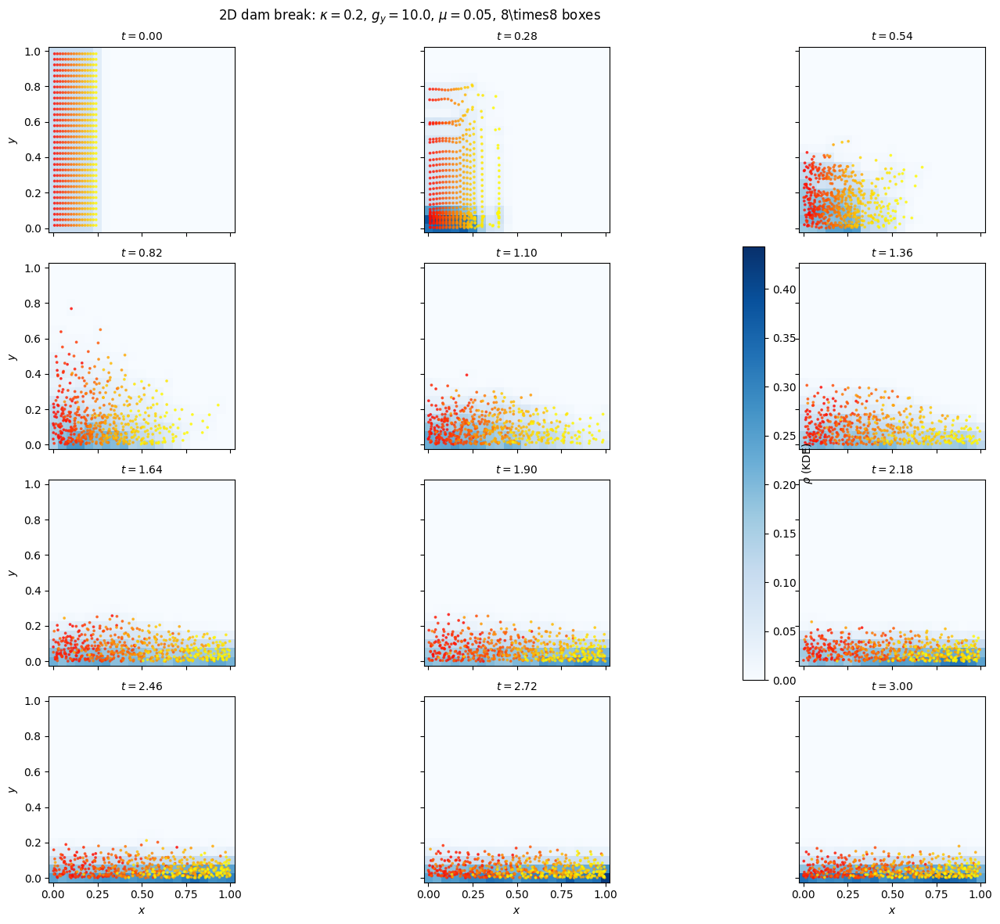
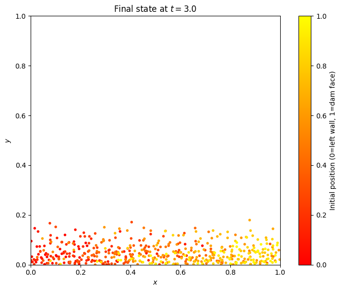

2D Dam Break Simulation with SPH#
Collapse of a Fluid Column under Gravity#
This tutorial simulates a classic 2D dam break: a dense fluid column confined to the left quarter of a closed box is released at \(t=0\). Gravity pulls the fluid downward and the pressure gradient drives a horizontal spreading wave. The SPH method naturally handles the large interface deformation and free-surface dynamics.
Physical Setup#
The domain is a \(1 \times 1\) box with reflective walls on all sides. At \(t = 0\) the fluid occupies the region \(x \in [0, L/4]\) at density \(\rho_\text{high}\); the rest of the box is effectively empty (markers with negligible weight are removed). As the fluid evolves:
The column collapses under downward gravity \(g_y\).
The pressure gradient (\(\propto c_s^2 \nabla\rho\) in the isothermal model) drives a shock-like spreading wave.
Viscosity damps small-scale velocity fluctuations and stabilises the SPH.
Reflections off the walls cause the fluid to slosh and eventually reach a hydrostatic equilibrium with density concentrated at the bottom.
SPH parameters for compressible free-surface flows#
The isothermal equation of state \(p = \kappa \rho\) is used with a weak compressibility coefficient \(\kappa = c_s^2 \ll 1\). This keeps the flow subsonic (Mach number \(\text{Ma} = U_\text{max}/c_s \ll 1\)) while allowing large density variations — the Weakly Compressible SPH (WCSPH) regime.
Markers with very small weights (corresponding to the near-vacuum region) are removed by the reject_weights option before the simulation starts.
What to expect#
The dense column hits the right wall, runs up it, and splashes back.
Multiple reflections produce complex sloshing dynamics.
At late times (\(t \gtrsim 2\)) the fluid settles near the bottom, forming a stable layer.
As a qualitative verification we check that no markers escape the closed box throughout the simulation.
[1]:
import logging
import os
import shutil
import numpy as np
import matplotlib.pyplot as plt
from struphy import (
BoundaryParameters,
EnvironmentOptions,
KernelDensityPlot,
LoadingParameters,
SavingParameters,
Simulation,
SortingParameters,
Time,
WeightsParameters,
domains,
equils,
)
from struphy.models import ViscousEulerSPH
from struphy.ode.utils import ButcherTableau
logger = logging.getLogger("struphy")
Physical and Numerical Parameters#
The free-fall time from height \(H/2\) is \(\sqrt{2(H/2)/g_y} \approx 0.32\), so \(T_\text{end} = 3\) covers roughly 9 free-fall times. The sound speed \(c_s = \sqrt{\kappa} \approx 0.45\), giving Mach number \(\text{Ma} = \sqrt{2 g_y H/2}/c_s \approx 0.71\) — weakly supersonic, which is acceptable for WCSPH with small \(\kappa\).
[2]:
# Physical parameters
kappa = 0.2 # isothermal coefficient (= c_s^2); weak compressibility
mu = 0.05 # dynamic viscosity (small, for stability)
g_y = 10.0 # gravitational acceleration (downward = -y direction)
r1 = 1.0 # domain width (x)
r2 = 1.0 # domain height (y)
n_high = 0.1 # initial density of the fluid column
# Derived
c_s = kappa**0.5
U_max = (2.0 * g_y * r2 / 2.0)**0.5 # rough free-fall velocity scale
Ma = U_max / c_s
# Numerical parameters
nx = 8 # boxes per spatial dimension
ppb = 32 # particles per box
plot_pts = 21 # KDE evaluation points per dimension
# Time stepping: CFL limit ~ h/c_s = (r1/nx)/c_s
dt = 0.02
Tend = 3.0
print(f"Sound speed: c_s = {c_s:.3f}")
print(f"Max velocity est: U_max = {U_max:.3f} (Mach = {Ma:.2f})")
print(f"Fluid density: n_high = {n_high} (vacuum elsewhere)")
print(f"Time stepping: dt={dt}, Tend={Tend}, {int(Tend/dt)} steps")
print(f"Total particles: ~{ppb * nx * nx // 4} (left quarter of domain)")
Sound speed: c_s = 0.447
Max velocity est: U_max = 3.162 (Mach = 7.07)
Fluid density: n_high = 0.1 (vacuum elsewhere)
Time stepping: dt=0.02, Tend=3.0, 150 steps
Total particles: ~512 (left quarter of domain)
Model Setup#
All three physical effects are active: pressure (with_p=True), viscosity (with_viscosity=True). The 2D Gaussian kernel is used. Gravity enters as a downward vector (0, -g_y, 0) in the pressure propagator.
[3]:
model = ViscousEulerSPH(with_B0=False, with_p=True, with_viscosity=True)
butcher = ButcherTableau(algo="forward_euler")
model.propagators.push_eta.options = model.propagators.push_eta.Options(butcher=butcher)
model.propagators.push_sph_p.options = model.propagators.push_sph_p.Options(
kernel_type="gaussian_2d",
gravity=(0.0, -g_y, 0.0), # downward gravity
kappa=kappa,
)
model.propagators.push_viscous.options = model.propagators.push_viscous.Options(
kernel_type="gaussian_2d",
mu=mu,
)
print("ViscousEulerSPH configured (pressure + viscosity + gravity).")
print(f" kappa={kappa}, mu={mu}, g_y={g_y} (downward)")
ViscousEulerSPH configured (pressure + viscosity + gravity).
kappa=0.2, mu=0.05, g_y=10.0 (downward)
Domain, Boundary Conditions and Diagnostics#
The box has reflective walls on all sides (bc="reflect") with SPH mirror ghost particles (bc_sph="mirror"). The reject_weights option removes near-vacuum markers (those with weight below the threshold) so that only the dense left-column particles are simulated.
The n_markers=1.0 option in SavingParameters saves every marker orbit at each time step, enabling post-hoc visualisation of particle trajectories.
[4]:
domain = domains.Cuboid(r1=r1, r2=r2)
loading_params = LoadingParameters(ppb=ppb, loading="tesselation")
weights_params = WeightsParameters(reject_weights=True, threshold=1e-6)
boundary_params = BoundaryParameters(
bc =("reflect", "reflect", "periodic"),
bc_sph=("mirror", "mirror", "periodic"),
)
sorting_params = SortingParameters(
boxes_per_dim=(nx, nx, 1),
dims_mask=(True, True, False),
)
kd_plot = KernelDensityPlot(pts_e1=plot_pts, pts_e2=plot_pts, pts_e3=1)
saving_params = SavingParameters(
n_markers=1.0, # save all marker positions every step
kernel_density_plots=(kd_plot,),
)
model.euler_fluid.set_markers(
loading_params=loading_params,
weights_params=weights_params,
boundary_params=boundary_params,
sorting_params=sorting_params,
saving_params=saving_params,
bufsize=2,
)
print(f"2D closed box [{r1}×{r2}], reflective walls on all sides")
print("Vacuum markers (weight < 1e-6) removed before simulation")
2D closed box [1.0×1.0], reflective walls on all sides
Vacuum markers (weight < 1e-6) removed before simulation
Initial Conditions#
The step_function_xy density profile places \(\rho = \rho_\text{high}\) where \(x < L/4\) and \(y < H\), and near-vacuum (\(\sim 10^{-8}\)) elsewhere. The near-vacuum markers are then removed by the reject_weights filter, leaving only the dense left-column particles.
We colour each marker by its initial \(x\)-position (normalised to \([0, 1]\) within the column) to track how the fluid mixes during the dam break.
[5]:
background = equils.ConstantVelocity(
density_profile="step_function_xy",
n=n_high,
upper_x=r1 / 4, # dense column: x < r1/4
upper_y=r2,
)
model.euler_fluid.var.add_background(background)
print(f"Initial condition: dense column (n={n_high}) for x < {r1/4}")
print("Near-vacuum markers (x > r1/4) will be removed by reject_weights")
Initial condition: dense column (n=0.1) for x < 0.25
Near-vacuum markers (x > r1/4) will be removed by reject_weights
Simulation Setup and Execution#
[6]:
test_folder = os.path.join(os.getcwd(), "struphy_verification_tests")
out_folders = os.path.join(test_folder, "ViscousEulerSPH")
env = EnvironmentOptions(out_folders=out_folders, sim_folder="dam_break")
time_opts = Time(dt=dt, Tend=Tend, split_algo="Strang")
sim = Simulation(
model=model,
env=env,
time_opts=time_opts,
domain=domain,
grid=None,
derham_opts=None,
)
print(f"Running 2D dam break: dt={dt}, Tend={Tend}")
sim.run()
print("Simulation complete.")
sim.pproc()
print("Post-processing complete.")
Starting run for model ViscousEulerSPH ...
Running 2D dam break: dt=0.02, Tend=3.0
Time stepping: 100%|██████████| 150/150 [00:23<00:00, 6.45step/s]
Struphy run finished.
Post-processing path /home/runner/work/struphy/struphy/doc/_collections/tutorials/struphy_verification_tests/ViscousEulerSPH/dam_break
No feec fields found in hdf5 file, skipping post-processing of fields.
Evaluation of 512 marker orbits for euler_fluid
Simulation complete.
100%|██████████| 151/151 [00:00<00:00, 366.97it/s]
Evaluation of sph density for euler_fluid
Post-processing complete.
Load Diagnostics#
[7]:
sim.load_plotting_data()
# KDE density field: shape (Nt+1, pts_e1, pts_e2, 1)
ee1, ee2, ee3 = sim.n_sph.euler_fluid.view_0.grid_n_sph
n_sph = sim.n_sph.euler_fluid.view_0.n_sph
# Marker orbits: shape (Nt_orb, n_markers, n_attrs)
# attrs for vdim=2: [x, y, z, v1, v2, w, diag, id]
orbits = np.asarray(sim.orbits.euler_fluid)
Nt = int(Tend / dt)
times = np.linspace(0.0, Tend, Nt + 1)
Nt_orb = orbits.shape[0]
t_orbit = np.linspace(0.0, Tend, Nt_orb)
X = np.asarray(ee1)[:, :, 0] * r1 # physical x, shape (pts_e1, pts_e2)
Y = np.asarray(ee2)[:, :, 0] * r2 # physical y
n_arr = np.asarray(n_sph) # (Nt+1, pts_e1, pts_e2, 1)
# Colour each marker by its initial x position within the column
x_init = orbits[0, :, 0]
c_val = x_init / (r1 / 4.0) # 0 = left wall, 1 = dam face
print(f"KDE field shape: {n_arr.shape}")
print(f"Marker orbits: {orbits.shape} [{Nt_orb} snapshots, {orbits.shape[1]} markers]")
Loading post-processed plotting data:
Data path: /home/runner/work/struphy/struphy/doc/_collections/tutorials/struphy_verification_tests/ViscousEulerSPH/dam_break/post_processing
The following data has been loaded:
grids:
self.t_grid.shape =(151,)
self.spline_values:
self.orbits:
euler_fluid, shape = (151, 512, 8)
Number of time points: 151
Number of particles: 512
Number of attributes: 8
self.f:
self.n_sph:
euler_fluid
view_0
KDE field shape: (151, 21, 21, 1)
Marker orbits: (151, 512, 8) [151 snapshots, 512 markers]
Visualisation: Density Field Snapshots#
Twelve equally spaced snapshots show the KDE density field (colour map) overlaid with marker positions (coloured by initial \(x\)). The colour gradient from blue (left wall) to red (dam face) reveals how the fluid column mixes as it spreads across the domain.
[8]:
snapshot_inds = np.round(np.linspace(0, Nt, 12)).astype(int)
orb_inds = np.round(np.linspace(0, Nt_orb - 1, 12)).astype(int)
vmax_plot = float(np.max(n_arr))
fig, axes = plt.subplots(4, 3, figsize=(15, 12), sharex=True, sharey=True)
im = None
for ax, idx, oidx in zip(axes.flatten(), snapshot_inds, orb_inds):
n_2d = n_arr[idx, :, :, 0]
im = ax.pcolormesh(X, Y, n_2d, vmin=0.0, vmax=vmax_plot, cmap="Blues", shading="auto")
ax.scatter(
orbits[oidx, :, 0],
orbits[oidx, :, 1],
c=c_val, cmap="autumn", s=3,
vmin=0.0, vmax=1.0, alpha=0.7,
)
ax.set_title(f"$t = {times[idx]:.2f}$", fontsize=10)
ax.set_aspect("equal")
for ax in axes[-1, :]:
ax.set_xlabel("$x$")
for ax in axes[:, 0]:
ax.set_ylabel("$y$")
if im is not None:
fig.colorbar(im, ax=axes.ravel().tolist(), label=r"$\rho$ (KDE)", shrink=0.6)
fig.suptitle(
rf"2D dam break: $\kappa={kappa}$, $g_y={g_y}$, $\mu={mu}$, {nx}\times{nx} boxes",
fontsize=12,
)
plt.tight_layout()
plt.show()
/tmp/ipykernel_11040/933893305.py:31: UserWarning: This figure includes Axes that are not compatible with tight_layout, so results might be incorrect.
plt.tight_layout()

Visualisation: Final Marker State#
Show the final particle configuration to check that the fluid has settled into a stable layer at the bottom of the box.
[9]:
fig, ax = plt.subplots(figsize=(8, 6))
sc = ax.scatter(
orbits[-1, :, 0],
orbits[-1, :, 1],
c=c_val, cmap="autumn", s=8, vmin=0.0, vmax=1.0,
)
ax.set_xlim(0.0, r1)
ax.set_ylim(0.0, r2)
ax.set_xlabel("$x$")
ax.set_ylabel("$y$")
ax.set_title(rf"Final state at $t = {Tend:.1f}$")
ax.set_aspect("equal")
plt.colorbar(sc, ax=ax, label="Initial position (0=left wall, 1=dam face)")
plt.tight_layout()
plt.show()

Verification Check#
Since the dam break has no simple analytical steady state, the verification is a domain-bounds assertion: no marker should escape the closed reflective box. A 1% tolerance accounts for the finite displacement during a single time step.
[10]:
x_all = orbits[:, :, 0]
y_all = orbits[:, :, 1]
x_min, x_max = float(np.min(x_all)), float(np.max(x_all))
y_min, y_max = float(np.min(y_all)), float(np.max(y_all))
print("=== Dam Break Domain Bounds Verification ===")
print(f" x range: [{x_min:.4f}, {x_max:.4f}] (domain [0, {r1}])")
print(f" y range: [{y_min:.4f}, {y_max:.4f}] (domain [0, {r2}])")
tol = 0.01 # 1% of domain size
try:
assert x_min >= -tol * r1 and x_max <= (1.0 + tol) * r1, (
f"Markers escaped x-domain: x in [{x_min:.4f}, {x_max:.4f}]"
)
print("\n✓ x-domain bounds check passed.")
except AssertionError as e:
print(f"\n✗ {e}")
try:
assert y_min >= -tol * r2 and y_max <= (1.0 + tol) * r2, (
f"Markers escaped y-domain: y in [{y_min:.4f}, {y_max:.4f}]"
)
print("✓ y-domain bounds check passed.")
except AssertionError as e:
print(f"✗ {e}")
=== Dam Break Domain Bounds Verification ===
x range: [0.0000, 1.0000] (domain [0, 1.0])
y range: [0.0000, 0.9844] (domain [0, 1.0])
✓ x-domain bounds check passed.
✓ y-domain bounds check passed.
Conclusion#
This tutorial demonstrated the SPH method for a free-surface flow problem:
Weakly Compressible SPH (WCSPH): the isothermal equation of state with small \(\kappa\) provides a pressure response that keeps the flow subsonic while allowing large density variations — the hallmark of free-surface SPH.
Mirror ghost particles enforce reflective boundary conditions on all four walls without special treatment for free surfaces.
Reject-weights cleanly removes near-vacuum markers before the simulation, avoiding spurious SPH interactions in the void region.
Marker colouring by initial position reveals the mixing and transport patterns during the collapse and subsequent sloshing.
The domain-bounds assertion verifies that the boundary conditions work correctly throughout the highly dynamic simulation.
The dam break is a standard benchmark for validating SPH implementations. More quantitative comparisons (run-up height, wave arrival time) can be made against published experimental data or higher-resolution SPH simulations.
[11]:
# Optional cleanup
if False: # set to True to remove simulation output
shutil.rmtree(test_folder)
print(f"Cleaned up {test_folder}")